4 Stability Ball Leg Curls Full Body Fat Blast · 4 · XAYfZo9RJPY · composite 637×262 · low res, from the 2020 PDF
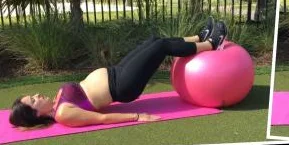

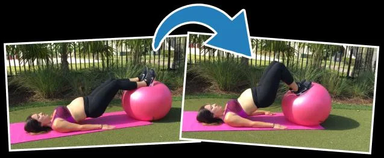
Left is the start position, right is the end, third is the photo as it sits in the PDF today. Both halves are cut from that PDF photo, so they can only be as sharp as the PDF. Pairs marked in red come from the 2020 PDFs, where the photos are about 500 px wide. Tell me the number of any pair to swap, crop differently or drop.
p1XtX2cVNZc · composite 470×284 · low res, from the 2020 PDF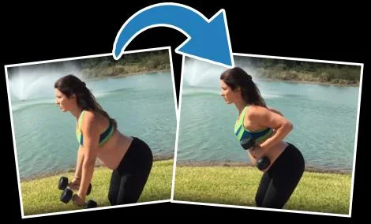
Mywk7zS_We4 · composite 511×305 · low res, from the 2020 PDF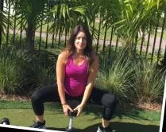
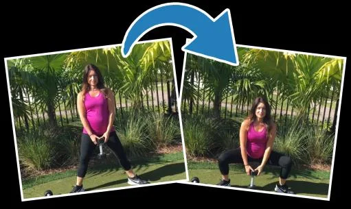
RdnPNgzKTSU · composite 556×314 · low res, from the 2020 PDF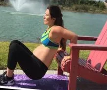
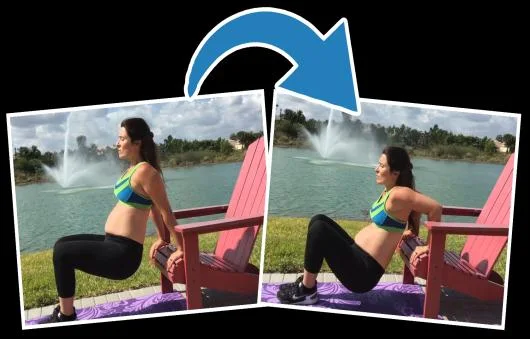
XAYfZo9RJPY · composite 637×262 · low res, from the 2020 PDF

nj0FUHY7rko · composite 530×339 · low res, from the 2020 PDF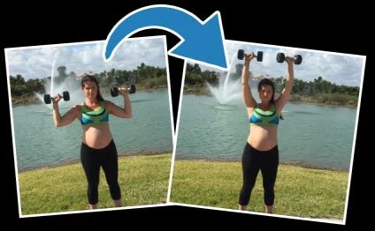
7FcLkHdf4Js · composite 512×300 · low res, from the 2020 PDF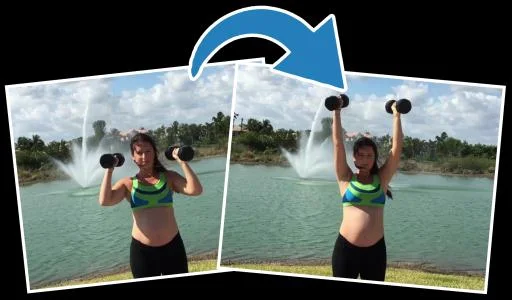
RdnPNgzKTSU · composite 511×288 · low res, from the 2020 PDFiJcMgzNCkV0 · composite 547×313 · low res, from the 2020 PDF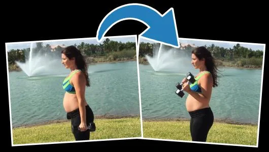
XAsfEvsmSDg · composite 496×262 · low res, from the 2020 PDF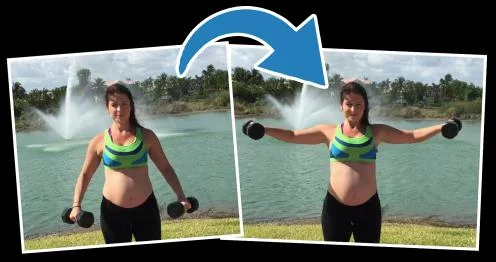
IvXGVym4t_Y · composite 529×320 · low res, from the 2020 PDF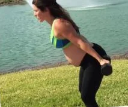
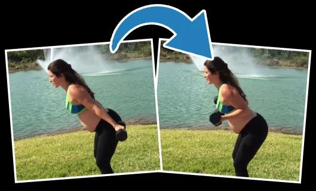
WbuvVZAbhPY · composite 511×321 · low res, from the 2020 PDF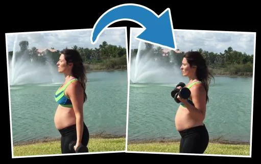
6CbpPRbbDb8 · composite 470×284 · low res, from the 2020 PDF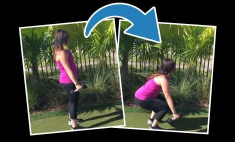
q8RHLWKgRqY · composite 511×305 · low res, from the 2020 PDF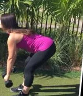
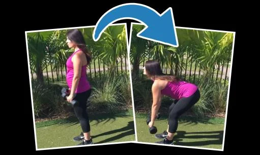
6JMzQ2D9LDQ · composite 556×314 · low res, from the 2020 PDF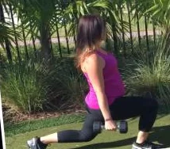
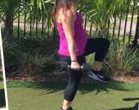
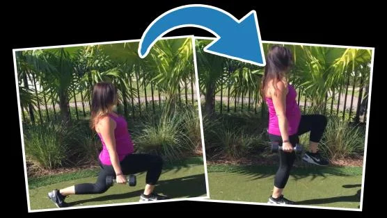
hYDdcmwFUY8 · composite 432×262 · low res, from the 2020 PDF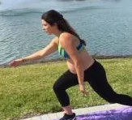
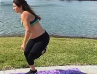
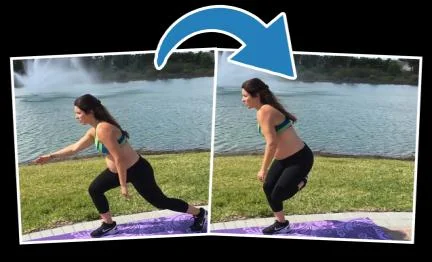
57V67yN3nh4 · composite 530×339 · low res, from the 2020 PDF
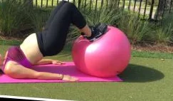

bLZPKMxGQ2o · composite 470×284 · low res, from the 2020 PDF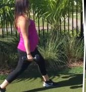
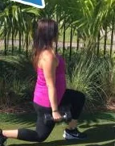
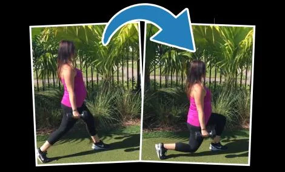
b-BYZkIZwPQ · composite 511×305 · low res, from the 2020 PDF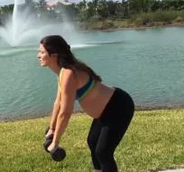
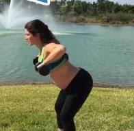
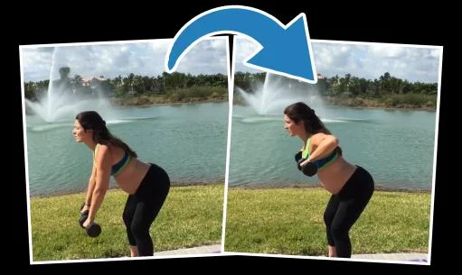
3swvJ_oGOx4 · composite 556×314 · low res, from the 2020 PDF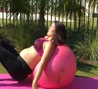
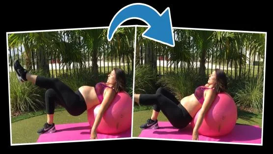
3Sc_BEMB14I · composite 421×262 · low res, from the 2020 PDF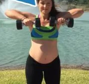
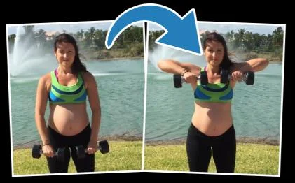
uicoxUY-unM · composite 529×339 · low res, from the 2020 PDF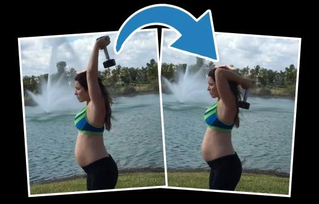
D3eIIeP0RcY · composite 470×284 · low res, from the 2020 PDF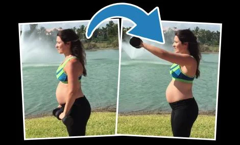
nQy1waEKPhY · composite 511×305 · low res, from the 2020 PDF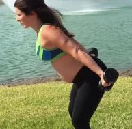
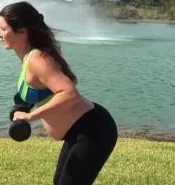
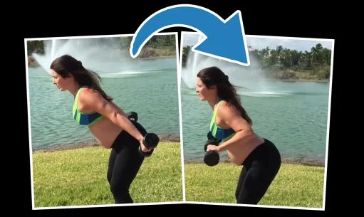
gvYUU5lXQMc · composite 556×314 · low res, from the 2020 PDF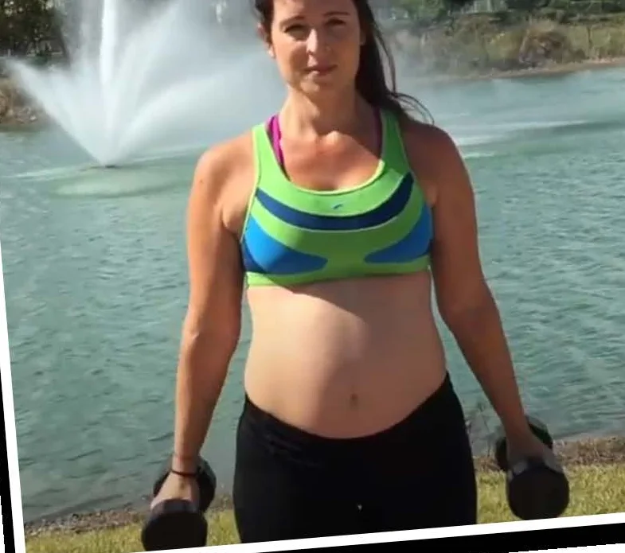
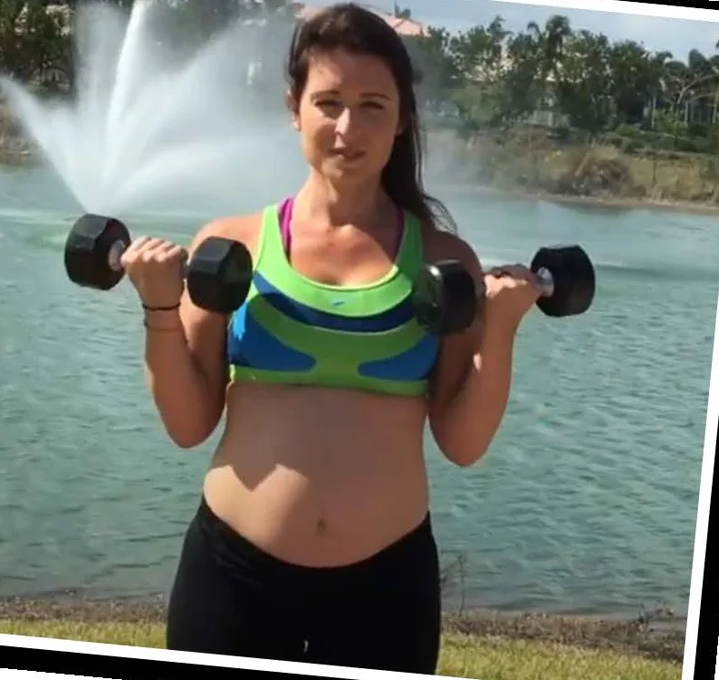
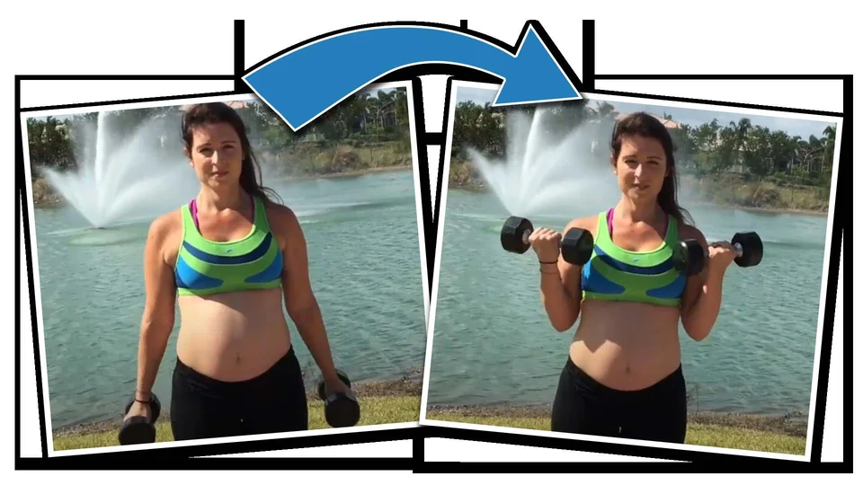
nj0FUHY7rko · composite 424×262 · low res, from the 2020 PDFRdnPNgzKTSU · composite 530×339 · low res, from the 2020 PDFiJcMgzNCkV0 · composite 530×299 · low res, from the 2020 PDFj6PWWcyeUno · composite 470×284 · low res, from the 2020 PDF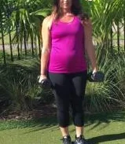


CN4AyMsLts4 · composite 511×305 · low res, from the 2020 PDF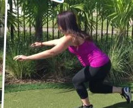
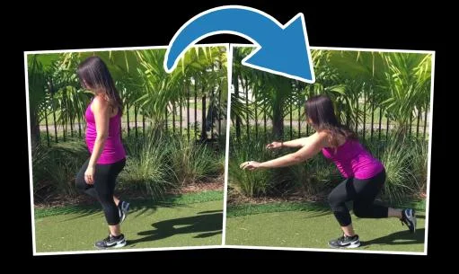
ZxgZ7J5r8Sw · composite 556×314 · low res, from the 2020 PDF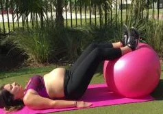
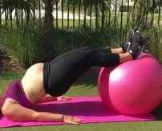
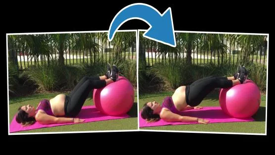
57V67yN3nh4 · composite 637×262 · low res, from the 2020 PDFBTfQ536mJ34 · composite 1920×1080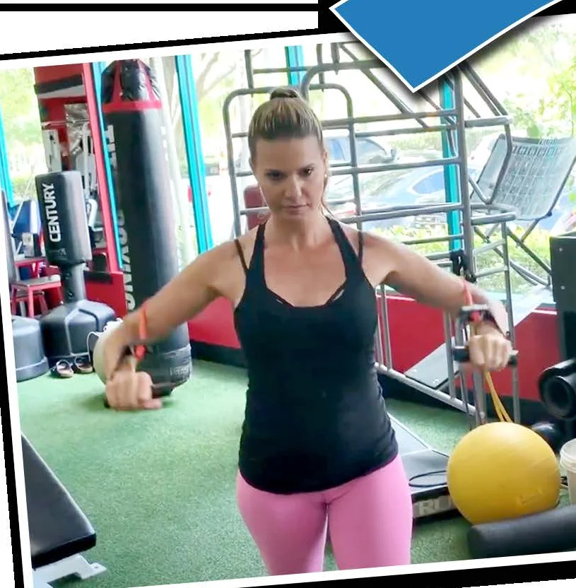
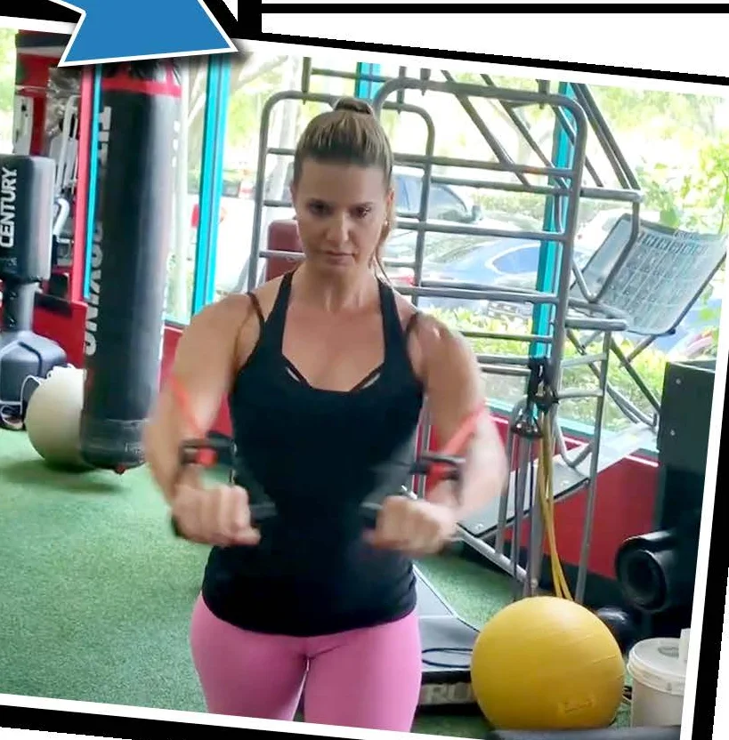
2Y0TlHw_BhU · composite 1920×1080vOPVNwnK5iA · composite 1920×1080prQqq9R5Fso · composite 1920×1080hYnUMhkfVOc · composite 1920×10800JjGINr6jSg · composite 1920×10804KBbFMIzh0Q · composite 1920×1080

KrcFks4Ac50 · composite 1920×1080VIt03PSoH34 · composite 1920×10802smpeUvfg8s · composite 470×284 · low res, from the 2020 PDF
NCqReUnN9tI · composite 1920×1080wGKG_76FnOw · composite 1920×1080f4FTCUD6F8Q · composite 1920×1080Ko4In6Hca4E · composite 1920×1080vOPVNwnK5iA · composite 1920×1080qLPaZ_qQ8uI · composite 1920×1080A7g06iUnhT8 · composite 1920×1080gvYUU5lXQMc · composite 1920×1080NrIh6YCyfUo · composite 1920×1080
Zt8MUV7N474 · composite 1920×1080MBcIiW0W3c8 · composite 1920×1080rDL47VYziWo · composite 1920×1080WVfg-Hizz50 · composite 1920×10804o1eHeFCSDw · composite 359×320 · low res, from the 2020 PDFKLZ-zMZ85Uw · composite 520×253 · low res, from the 2020 PDFOuZUC0_o0A0 · composite 505×249 · low res, from the 2020 PDFg4r8FJUKLCo · composite 555×288 · low res, from the 2020 PDFSwXQoySvqTQ · composite 370×320 · low res, from the 2020 PDFYCZv2e3BNY8 · composite 347×315 · low res, from the 2020 PDFDOD-agA1G78 · composite 523×249 · low res, from the 2020 PDF1IbmT1hfDpo · composite 551×260 · low res, from the 2020 PDFxMZJcGfp2gY · composite 547×260 · low res, from the 2020 PDF1MiyIDslZwg · composite 370×320 · low res, from the 2020 PDFbHpThj7mC18 · composite 524×253 · low res, from the 2020 PDFKBemSo8sjr8 · composite 427×370 · low res, from the 2020 PDFwA2bvSLveeI · composite 549×260 · low res, from the 2020 PDF